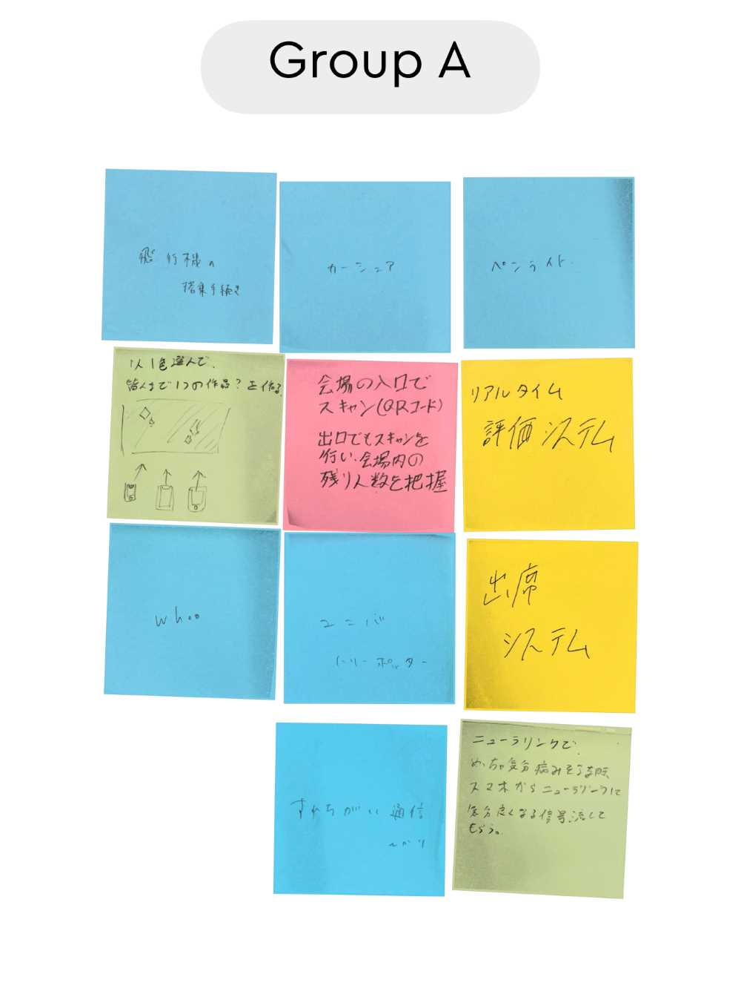
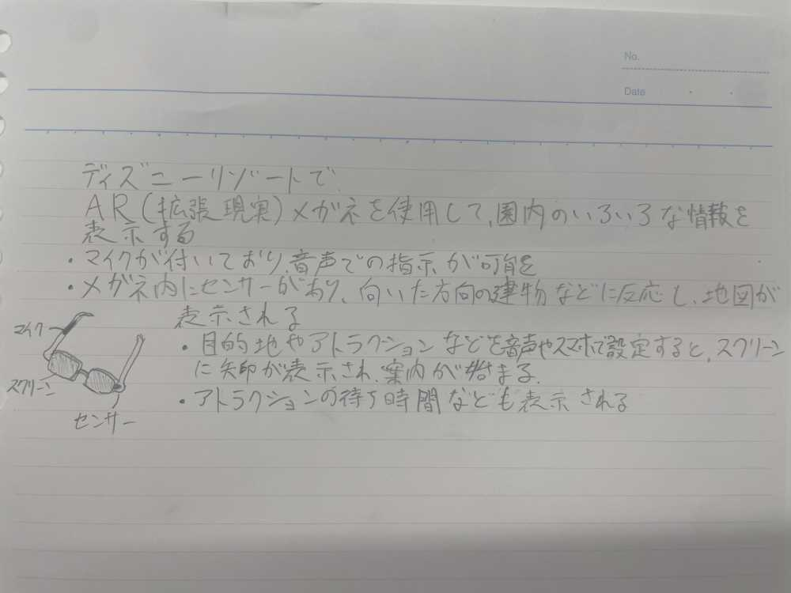

1.IoTとは何か
従来インターネットに接続されていなかった様々なモノ（センサー機器、駆動装置（アクチュエーター）、住宅・建物、車、家電製品、電子機器など）が、ネットワークを通じてサーバーやクラウドサービスに接続され、相互に情報交換をする仕組みです。読み方は「アイオーティー」で、「Internet of Things」の略からもわかるように「モノのインターネット」という意味で使われています。
2.実験した動画
YouTube
3.グループワークした内容（ポストイット画像）

4.IoT（遠隔操作）でどんなことができそうか？（スケッチ）
